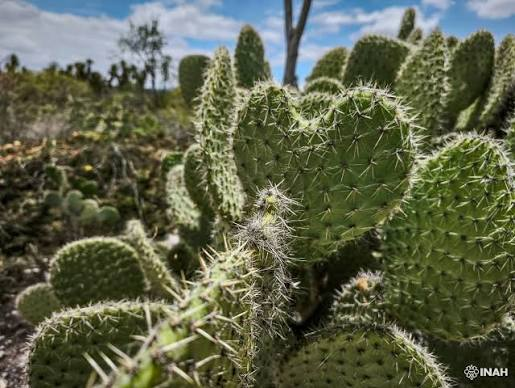
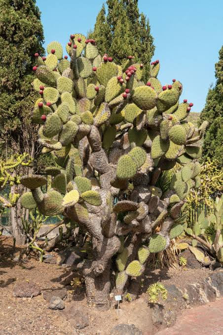
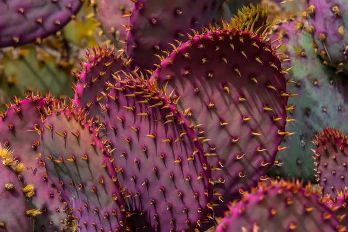

Los nopales son una planta muy representativa de México. Se utilizan como alimento y tienen muchos beneficios para la salud.
Diversidad biológica Los nopales se encuentran desde el norte hasta el centro del país y alcanzan su mayor complejidad y riqueza en el Altiplano central. Cada nopalera constituye, en una escala regional, un universo de especies vegetales y animales que sólo se hallan bajo esas condiciones particulares. Los factores naturales, así como el uso que se da a las nopaleras silvestres determinan el número de especies de nopal y su abundancia. Existen nopaleras compuestas por una sola especie y otras que llegan a tener hasta diez.



Si quieres conocer más sobre los nopales, visita el siguiente sitio:
Haz clic aquí para aprender sobre los nopales